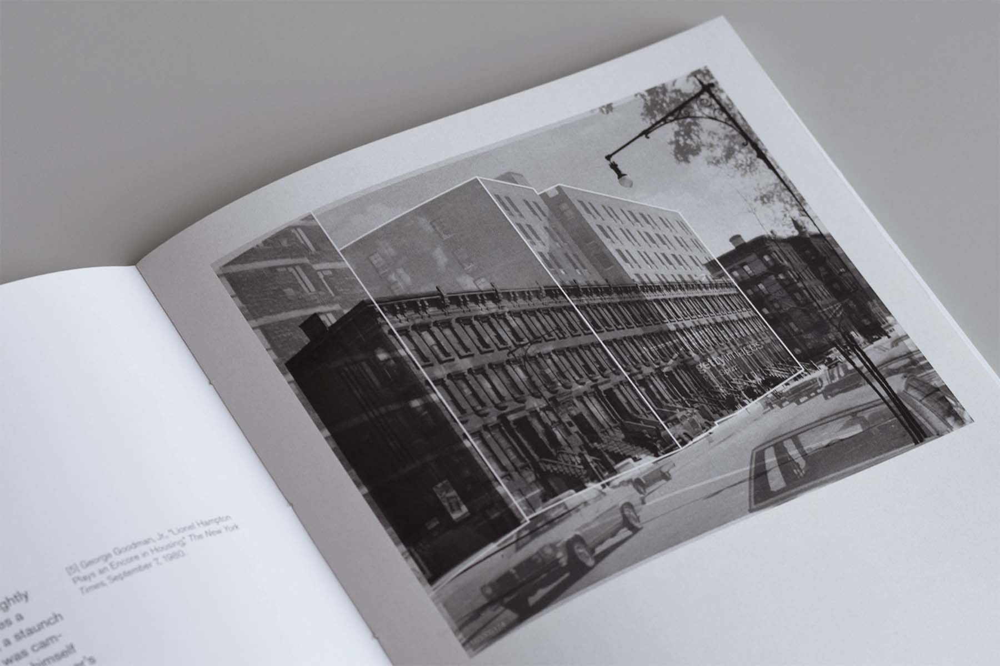
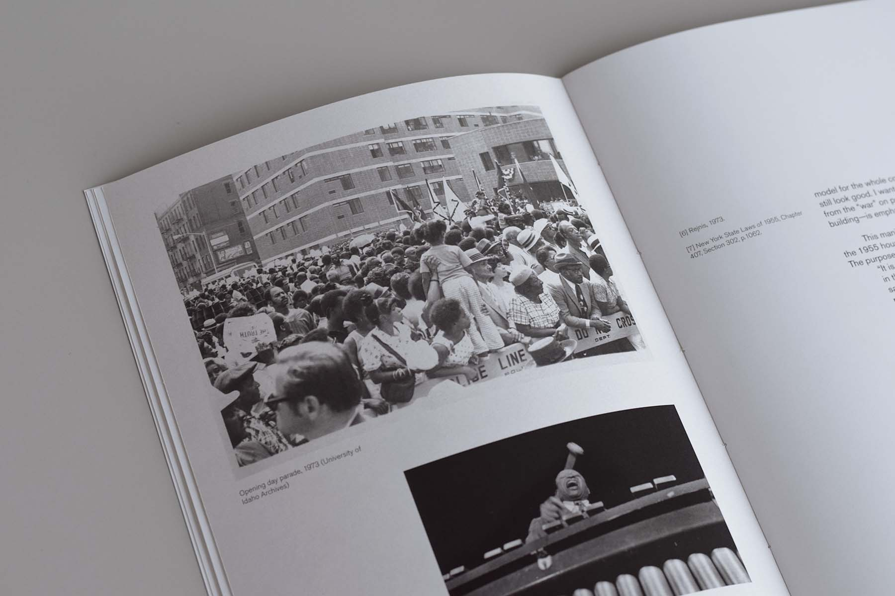

Bedrock of Investment: Lionel Hampton Houses and the Politics of Land and Removal
Tall Tales, Ife Vanable
Fall 2021
In 1971, the well-known jazz musician Lionel Hampton made “an investment in Harlem,” as he proudly called it. His donation laid the foundation for the development of Lionel Hampton Houses, a 355-unit apartment complex in Central Harlem, overlooking St. Nicholas Park. Harlem needed “investing” because it was seen—in highly racialized ways—to be in a state of crisis—decaying, dirty, overwhelmed. The definition of “crisis” may be understood not just as a protracted condition of turmoil but also, in its original pathological definition, as the turning point of a disease indicating either recovery or death. Lionel Hampton Houses, I argue, was an investment premised on the speculative profit from overcoming Harlem’s state of “disease” and transitioning to a state of “recovery.”

I compare the Hampton Houses, designed by J. Max Bond, Jr. and Donald P. Ryder, with what was razed to make space for them in order to identify how the project negotiates this boundary between recovery and death.

I look closely at the relationship between the apartment tower and the adjacent park at multiple scales—from the building’s corrugated façade treatment that relates to the exposed rock face, to the reconfiguration of the urban block that allows for new views to the park. Through its geological import, the building may be read not just as a tower in a park but as a tower and a park. I argue that Bond and Ryder’s answer to Harlem’s supposed crisis is to stake a claim for Black aliveness at all scales—from the architectural to the geological.